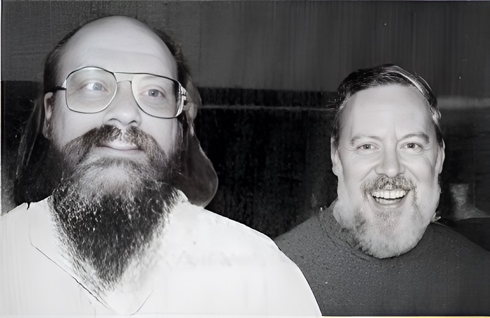
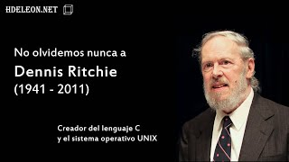

Dennis MacAlistair Ritchie (9 de septiembre de 1941 - 12 de octubre de 2011) fue un informático estadounidense. Creó el lenguaje de programación C y, con su colega Ken Thompson, el sistema operativo Unix y el lenguaje de programación B. Ritchie y Thompson fueron galardonados con el premio Turing de la ACM en 1983,  la medalla Hamming de la IEEE en 1990 y la medalla nacional de tecnología del presidente Bill Clinton en 1999. Ritchie era el jefe del Departamento de Investigación de Software de Sistemas de Lucent Technologies cuando se jubiló en 2007. Dennis Ritchie nació en Bronxville, Nueva York. Su padre era Alistair E. Ritchie, un científico de Bell Labs desde hace mucho tiempo y coautor de The Design of Switching Circuits sobre la teoría de los circuitos de conmutación. Cuando era niño, Dennis se mudó con su familia a Summit, Nueva Jersey, donde se graduó de Summit High School. Se graduó de la Universidad de Harvard con títulos en física y matemáticas aplicadas. Después de obtener su licenciatura, decidió con la típica modestia que no era lo suficientemente inteligente como para ser físico. En 1967, Ritchie comenzó a trabajar en el Bell Labs Computing Sciences Research Center, y en 1968 defendió su tesis doctoral sobre “Estructura del programa y complejidad computacional” en Harvard bajo la supervisión de Patrick C. Fischer. Sin embargo, Ritchie nunca recibió oficialmente su doctorado ya que no envió una copia encuadernada de su disertación a la biblioteca de Harvard, un requisito para el título. En 2020, el museo de Historia de la Computación trabajó con la familia de Ritchie y la familia de Fischer y encontró una copia de la disertación perdida. Durante la década de 1960, Ritchie y Ken Thompson trabajaron en el sistema operativo Multics en Bell Labs. Luego, Thompson encontró una vieja máquina PDP-7 y desarrolló sus propios programas de aplicación y sistema operativo desde cero, con la ayuda de Ritchie y otros. En 1970, Brian Kernighan sugirió el nombre “Unix”, un juego de palabras con el nombre “Multics”. Para complementar el lenguaje ensamblador con un lenguaje de programación a nivel de sistema, Thompson creó B. Más tarde, B fue reemplazado por C, creado por Ritchie, quien continuó contribuyendo al desarrollo de Unix y C durante muchos años. Durante la década de 1970, Ritchie colaboró con James Reeds y Robert Morris en un ataque de sólo texto cifrado a la máquina de cifrado estadounidense M-209 que podía resolver mensajes de al menos 2000–2500 letras. Ritchie relata que, después de discutir con la NSA, los autores decidieron no publicarlo, ya que se les dijo que el principio era aplicable a las máquinas que todavía están en uso por gobiernos extranjeros.  Ritchie también participó en el desarrollo de los sistemas operativos Plan 9 e Inferno operating systems, y el lenguaje de programación Limbo. Como parte de una reestructuración de AT&T a mediados de la década de 1990, Ritchie fue transferido a Lucent Technologies, donde se retiró en 2007 como jefe del Departamento de Investigación de Software de Sistemas. Dennis Ritchie con Doug McIlroy (izquierda) en mayo de 2011 Ritchie fue encontrado muerto el 12 de octubre de 2011, a la edad de 70 años en su casa en Berkeley Heights, Nueva Jersey, donde vivía solo. La primera noticia de su muerte provino de su antiguo colega, Rob Pike. No se ha revelado la causa ni la hora exacta de la muerte. Había tenido una salud frágil durante varios años después del tratamiento por cáncer de próstata y enfermedad cardíaca. La noticia de la muerte de Ritchie se vio ensombrecida en gran medida por la cobertura mediática de la muerte del cofundador de Apple, Steve Jobs, que ocurrió la semana anterior.